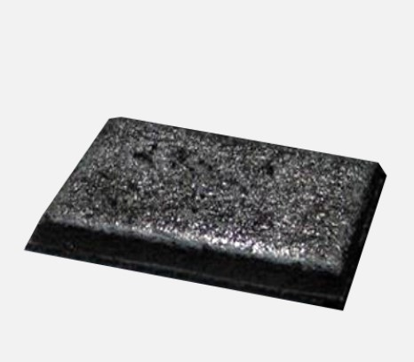

Асфальтобетон литой гранулированный
BIGUMA®- GRANO MA

Ремонтные массы «Литой асфальт» для дорожного и гражданского строительства

Асфальтобетон литой гранулированный

Ремонтные массы «Литой асфальт» для дорожного и гражданского строительства
ТОО TARKER осуществляет поставку материалов для дорожного строительства, ремонта мостов и ремонта дорожных покрытий в Казахстане.
В ассортименте представлены литой асфальтобетон Gussasphalt, ремонтные смеси и специализированные материалы для дорожных работ.
Литой асфальтобетон применяется при строительстве и ремонте мостов, автомобильных дорог и других объектов транспортной инфраструктуры.
Материалы DGA позволяют применять современные решения для устройства и ремонта дорожных покрытий.